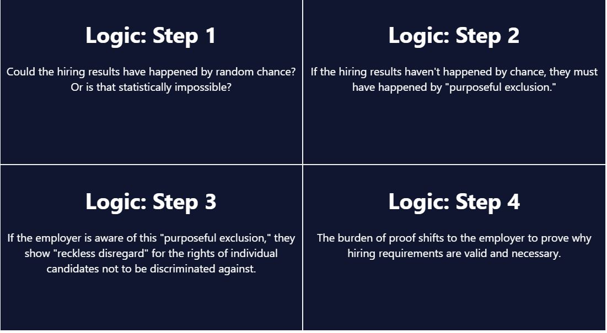
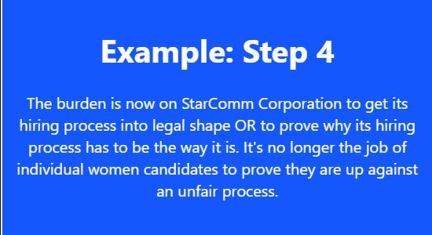

Establishing how to think about data will set you up for success when you start analyzing it.
Every job is a data job!
– every Data Scientist everOrganizations are fueled by data, and data scientists and analysts are at the forefront of working with it. But they don’t work alone, and even the most technically sophisticated data scientist will need to communicate about data.
This unit will help you build the conceptual foundation you need both to work with data yourself and present your insights to adjacent teams.
There’s no programming yet, but we will get there. For now, join us on a journey to explore the building blocks of data, and establish common vocabulary and ideas.
Why?
First things first, let’s answer a crucial question: Why is data literacy important? In other words, why should anyone aim to be data literate?
There are a lot of good answers! In this lesson, we’ll see how data literacy helped 19th-century doctors end cholera epidemics and discover the root cause of the disease. We’ll explore how it has helped reveal discrimination in hard-to-measure settings like hiring practices and advance medical knowledge by improving clinical trial data quality.
Data literacy also helps us to produce readable work for other people. As we’ll see, even when good data is there, the inability to tell a clear story can have dire consequences.
It’s no secret that data is an incredibly powerful tool. With all that’s at stake, it’s also not a surprise that understanding a data-driven conclusion can feel overwhelming sometimes – both as an audience member and as an analyst. No matter which side we find ourselves on, data literacy is about how well we read, interpret, and communicate with data.
Let’s dive in with some case studies about data literacy triumphs and failures.
Data Gaps
Garbage in, garbage out is a data-world phrase that means “our data-driven conclusions are only as strong, robust, and well-supported as the data behind them.”
For example: we have a lot of data on heart attacks, but there’s room for improvement when it comes to data quality. Heart disease is the leading cause of death in women, but as of 2021, women account for only 38% of participants in relevant research studies.
There are key differences between men’s and women’s heart attacks that impact how they’re treated, but our data doesn’t yet adequately outline those differences. This leads ultimately to worse outcomes in treatment and a higher post-heart attack mortality rate for women.
How does data literacy factor in? Part of understanding and communicating with data means asking the right questions so that we end up with useful, relevant data. We can already answer lots of questions about heart attacks, but we won’t learn the ins and outs of women’s heart attacks by studying mostly men.
Part of practicing good data literacy means asking…
- Do we have sufficient data to answer the question at hand?
- Can my data answer my exact question?
Even if we have an excellent mathematical model of a situation, it can only make predictions as good as the data that goes into it. Garbage data will make garbage predictions, no matter how good the model is.
Imagine having a model that can accurately predict the weather in Rio de Janeiro 90% of the time, but then using data from only United States weather stations as the input values. Or using temperature data that was collected only at noon each day. Or using wind speed data collected only by estimating with a licked finger held up in the breeze. No matter how good the model is, it will need precise and accurate data from Brazil to give a helpful output.
Addressing Bias
One question the data on heart attacks might prompt is “why did the trials have only 38% female participation?”
In part, for historical reasons: in the 1950s, pregnant women in Europe and Canada were prescribed a drug called thalidomide for morning sickness. This drug resulted in severe birth defects and was taken off the market. As a result, in 1977 the US Food and Drug Administration (FDA) recommended excluding from early-stage clinical trials all women who could become pregnant. While intended to protect women, the recommendation put them at risk in a different way, limiting our knowledge of the effects of drugs on women’s bodies.
The FDA reversed these recommendations in the 1990s, and today government-funded clinical trials must include women and other minorities. Yet, the trials don’t need to include minority groups at representative levels, and the majority of drug trials in the US aren’t government-funded anyway.
In this case, participation might also be impacted by media representations. In typical TV or movie heart attacks, we almost always see a man clutching at his arm or chest. Not only do women have heart attacks too (we wouldn’t know it from watching TV), they rarely experience chest pain as a symptom.
(In fact, in the top 20 “heart attack” movies* on IMDB, only two heart attacks happen to women: one is fake, and the other is a disguised murder. So… zero real heart attacks in women in a list of top 20 “heart attack” movies!)
It might seem like a stretch from data literacy to TV heart attacks, but sound science means examining bias and controlling variables wherever possible.
Part of practicing good data literacy means asking…
- Who participated in the data?
- Who is left out?
- Who made the data?
*top movies with keyword “heart attack” where there is actually a heart attack mentioned or shown in the movie – not The Exorcist, which is on that list because people have had heart attacks while watching it… yikes!
What is Statistics
Now let’s check out a case study that showcases the value of data literacy in the legal system.
Big, amorphous injustices like hiring discrimination are hard to prove in court. Hiring discrimination is a pattern of biased behavior towards candidates. This bias results in qualified candidates not getting hired because of their traits.
Throughout the 1900s, companies in the US were able to justify hiring on a case-by-case basis. After all, it’s legal to hire or not hire candidates based in part on soft qualities such as “fit” and “office culture.” But if these qualities are a mask for factors like a candidate’s race, gender, or religion, the company has broken anti-discrimination laws.
Usually, a lawyer would have to show the many individual cases that proved a company was discriminatory. Instead, lawyer Elaine W. Shoben shifted the burden of proof to companies. How was she able to do this with data literacy? She used the power of statistics! Statistics helps us test the likelihood of an event happening by random chance versus systematically.
What does that actually mean? For example, you’re more likely to see more cars on the road at 8am on Wednesday than at 8am on Sunday. This isn’t a random occurrence – the increase in cars is systematically explainable by the existence of rush hour due to standard business hours. It is statistically more likely to see many cars during rush hour than at other times.
We’ll see in the next exercise exactly how Elaine Shoben used statistics to change how we assess bias in hiring.
Statistics At Work

So how did Elaine Shoben show that discrimination was at play in hiring decisions? It’s a bit heavy on the legal jargon, but we can break it down to see how it works.
- First, she said that we can use statistics to see if the hiring results of subjective interviews are so unlikely that they couldn’t have happened by chance. In other words, is it even possible (in statistical terms) that the pattern of who got the job could be based on random chance?
- If the results couldn’t happen by chance, then the alternative is that they must happen by “purposeful exclusion.” In other words, it would mean people are excluded from the job by discriminatory hiring practices.
- If the employers are aware of the “exclusionary effect,” and they continue to use that same hiring process, then they’re showing a “reckless disregard” for the rights of individual candidates not to be discriminated against in the hiring process. (Read it a few times if you need to!)
- Once we acknowledge that, the burden shifts to employers to show why their hiring requirements are valid and necessary. We no longer assume the hiring practices are legitimate and make job candidates prove otherwise

Statistics at work! That’s definitely a bit of legal jargon, but how cool is it to use statistics to reveal a systematic pattern of discrimination, rather than trying to piece together a case from individual experiences. That’s really what stats is all about.
High Stakes Visualizations
Okay, we’ve walked through recognizing data quality and bias in healthcare and using statistics to answer big legal questions. Where else does data literacy come into play?
Data visualization is one of the most visible and obvious places we interact with data. It helps us to explore and understand data-driven arguments and is a powerful tool for communication.
While most data viz we see is of the “everyday” variety, in this case study we’ll look at a highly consequential visualization: one of the charts that NASA-contracted engineers used to make the argument that the Challenger space shuttle should not take off on January 28, 1986.
The Challenger space shuttle carried seven US astronauts who were supposed to deploy a satellite and study Halley’s Comet while they were in orbit. Less than two minutes after takeoff, however, the shuttle exploded, killing all seven crew members.
The explosion was caused by a failure of two O-rings: small rubber rings that helped create an airtight seal between the space shuttle and its launch fuel supply. Before the launch, engineers were concerned about how the low-temperature forecast would affect the O-rings’ ability to make a proper seal.
The engineers made their arguments in favor of postponing the launch using, in part, a series of data visualizations that showed launch success rates at various temperatures. Tragically, their arguments did not prevent the launch from proceeding.
The Challenger Visualizations

Before we pick apart this visualization, it’s worth saying that hindsight is 20/20. If it were as simple as “obviously, the O-rings were going to fail,” then the Challenger would never have been launched. This event was the culmination of several years rather than an isolated incident, so there were many other factors at play.
Following the incident, a Presidential Commission was initiated to investigate the causes of the catastrophe. The commission determined that it was directly the result of O-ring failure. However, they also concluded that management from both NASA and Morton Thiokol (the company NASA had contracted to design and maintain its rocket boosters) had ignored evidence that indicated there was significant risk of O-ring failure at lower temperature launches. Additionally, the commission noted that they had failed to adequately test the equipment they were using, despite consistent requests from engineers for several years preceding the incident.
In short, it is unlikely that this particular visualization played a pivotal role in the decision-making conversation that ended with management settling to launch as scheduled.
From a data literacy standpoint, though, we can definitely see how a better visualization would make the trend of the data more apparent. The engineers had the data to know that O-rings began to fail at lower temperatures. But their visualization was not created in a way that made that danger clear.
The visualization of rocket launches was organized by date, which made it hard to see the pattern of launch failures at lower temperatures (see the top-right image). When Edward Tufte later organized the rockets by temperature, that pattern became much more obvious (see the lower image). Additionally, including all of the rocket symbols for decoration didn’t make the argument clearer, but instead added distracting visuals to the page.
The visualization would have been easier to interpret with fewer distracting lines and a more direct link between temperature and launch failures.
While most of us will (thankfully) never be in the position of making or interpreting life-or-death data visualizations, good data literacy helps us to make informed decisions everyday. Should I bring an umbrella? Should I postpone my trip to avoid public health risks? Should I buy stock in Blockbuster? Whatever the questions, improving our data literacy can help us reach the answers.
Critically Analysing the Challenger visualizations

Take a minute to look through the visualization above.
The top-right image was part of the original visualizations that NASA engineers presented to make their case. It shows the launches organized by date, and no pattern of launch failure is clear. What’s more, it was presented on a slide projector, without the key alongside it.
Compare this to the image below which was created years later by statistician Edward Tufte by rearranging the original graph.
Its purpose was to show that when launches are organized by temperature, we can see the cluster of launch failures at lower temperatures.
Numeracy
Let’s kick off the final section: analysis, or turning data into useful information. The key question of analysis is, “what’s the takeaway?”
Let’s start with a humble reminder that humans have some limitations when it comes to numbers.
We’re generally very good when it comes to numbers we can count, or numbers we use in context. For example, money makes a lot of sense in everyday amounts like coffee, bills, or rent. We can visualize what those numbers mean and understand the consequences of them increasing or decreasing by, say, 20%.
But numbers without everyday context are another story. Think about the GDP of a country, or the personal wealth of an evil billionaire. How would that number change if we added 20% to it? We can probably do the calculation without too much challenge, but what does the change in that number actually mean in real life terms?
With really big (or really small) numbers, it takes extra care and attention to understand how big or how small the quantity is.
On that note, powers of ten make a big difference, especially at a large scale! A million vs. a billion? Really different! (1 million seconds is equal to about 11 days. 1 billion seconds is equal to about 32 years ü§Ø )
Part of an analyst’s job is to provide context and clarifications to make sure that audiences are not only reading the correct numbers, but understanding what they mean.
Causal Analysis and John Snow’s cholera theory: Part 1
In the world of data, we’ll hear time and time again that “correlation does not equal causation.” In other words, while two events might be connected or related, that doesn’t mean they’re in a cause-and-effect relationship.
A “causal link” means proving that one event causes another. One of the most important ways this has been applied in the last few centuries has been in epidemiology, the study of diseases. Discovering correct causal links has meant big things for the prevention and treatment of diseases.
Let’s take a look at one of the earliest instances of successful causal analysis in medicine, which starts with a man called John Snow. (Not the fantasy-famous Lord of the North, but a real-life nineteenth century London doctor.)
Until Dr. Snow’s discovery in the mid-nineteenth century, people believed that cholera was caused by vapors rising from the burial grounds of plague victims from two centuries earlier. (A good try, but cholera is actually a waterborne disease caused by bacteria found in sewage. It causes severe dehydration and has a fatality rate of over 50% when untreated.)
By studying earlier cholera epidemics and organizing his data analysis around his hunch that cholera was waterborne, Dr. Snow was able to link an 1854 cholera outbreak in London to a contaminated water pump – effectively proving a causal relationship between contaminated water and cholera before humans even knew that bacteria existed!
How’d he do it? Let’s find out in Part 2.
Causal Analysis and John Snow’s cholera theory: Part 2
Dr. John Snow’s causal analysis breakthrough started with how he visualized his data: he organized cholera death records by location rather than by time, which was more common. He made a map, and discovered that the deaths centered around a water pump on Broad Street.
From there, Dr. Snow used death records that seemed to contradict his theory to strengthen his explanation. For instance, a woman who died of cholera in a completely different neighborhood had just visited her aunt’s house near Broad Street and drunk water from the pump.
Dr. Snow also found that a workhouse and a brewery near the pump both had few or no cholera deaths. Upon investigation, he learned that the workhouse had its own water supply, and that the brewers not only had access to a well at the brewery, but that they drank only malt liquor and never visited the Broad Street pump.
Snow advised that the handle be taken off the Broad Street pump to prevent people from drinking the contaminated water. The handle was removed, and this action coincided with the end of that outbreak. The number of deaths was already trailing off (more than 75% of residents had left the area to avoid “choleric vapors”), but this public health intervention prevented the disease from recurring as people returned, and the epidemic ended.
The built-in test cases helped Snow to isolate variables and prove that the key variable was that people who developed cholera had drunk water from the contaminated pump. From there, repeated studies of cholera and modern lab experiments have only confirmed the causal link he discovered.
In modern lab science, we use controlled experiments to isolate variables and prove causation. Controlled experiments are often not possible outside of lab settings, though, so data scientists do the best they can to isolate and control variables and get comfortable working with some amount of error.

The image above is Dr. Snow’s data visualization solution, a map with cholera death data visualized directly on it in a “geographically-distributed bar chart”.
There’s a small dot on Broad Street, in the center of the map, labeled “PUMP.” Notice how the bars (each representing an instance of cholera) are generally concentrated around this part of the map. There are other pumps labeled on the map– for instance, one just south of Broad Street, on the corner of Brewer Street and Bridle Street. All these other pumps have fewer cases of cholera near them than the Broad Street pump.
Wrap Up
The road to confident data literacy is full of fascinating examples, and knowledge that helps us make sense of one of the most powerful tools of our age: data.
In this lesson, we covered data quality and data ethics, and saw how interrogating data quality can lead to better outcomes in healthcare. Along with that, we saw how recognizing and addressing bias leads to stronger data and deeper truth.
We learned how people have used statistics to solve important but nebulous legal problems like hiring discrimination. Knowing how to use statistics has huge consequences for learning about issues that are too big to fully address one-by-one.
We saw how visualizations can make or break a data conclusion when it comes to communicating findings. While most of us aren’t making or interpreting life-or-death data viz, learning from the Challenger space shuttle explosion can help everyone to make more intentional, meaningful decisions around data visualization.
Finally, we talked about data analysis. We covered the importance of context when it comes to interpreting data: not just what the numbers are, but what they mean. And we learned about correlation and causation, capping things off with a triumph for modern medicine based on good data visualization and causal analysis.